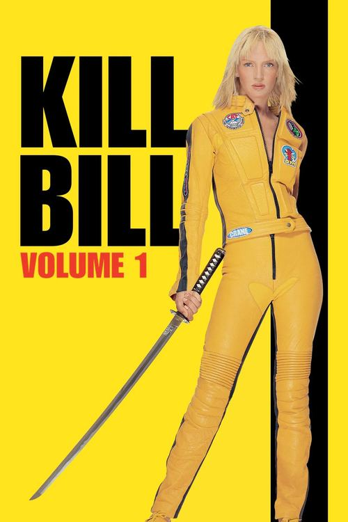
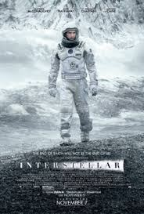
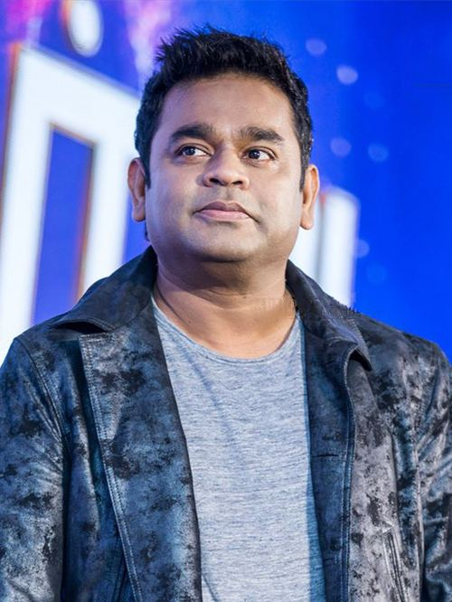
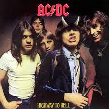
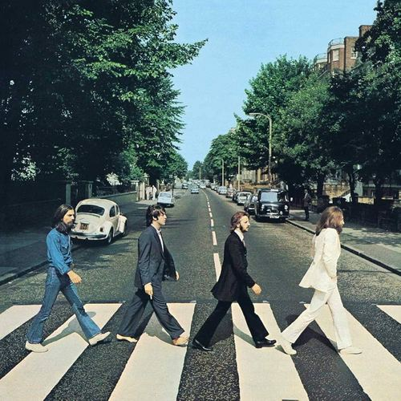

PART I
THE WORKS
what was built
I
CRAVE ⟶
A marketplace for food — ordering, fulfilment, the whole road from hunger to table.
React·Node·PostgreSQL
II
CRYPTOAPP ⟶
Live markets rendered as they move — prices streaming, charts breathing.
React·WebSocket
III
TORONTO ⟶
A city read through its data — patterns surfaced from the civic record.
Python
IV
NNETS ⟶
Neural networks built from first principles — no framework, only the mathematics.
Python·Micrograd
.jpg?width=1000)
PART II
THE CRAFT
tools of the trade
JAVASCRIPT
the mother tongue
REACT
the face of things
NODE.JS
the engine room
PYTHON
for thinking aloud
POSTGRESQL
keeper of records
DOCKER
the vessel
AWS
the territory
GRAPHQL
the negotiator

PART III
THE MUSES
films & sound that shaped the hand
FILM
K

KILL BILL
style as substance
FILM
P

PULP FICTION
structure is optional
FILM
I

INTERSTELLAR
scope, earned
SOUND
R

A.R. RAHMAN
the score beneath everything
SOUND
A

AC/DC
ship it loud
SOUND
B

THE BEATLES
the fundamentals